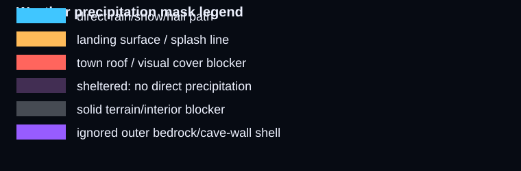
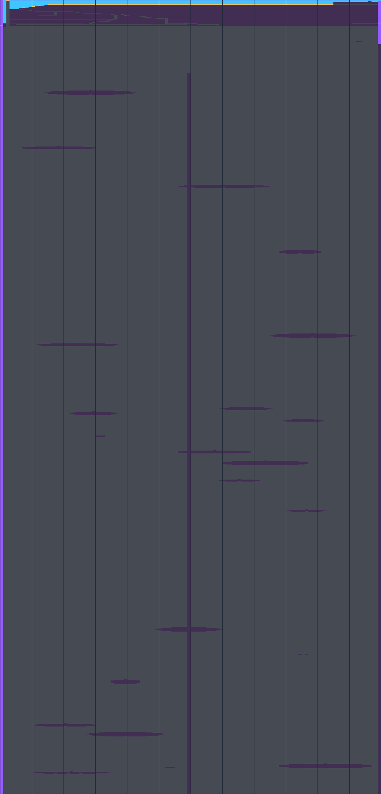
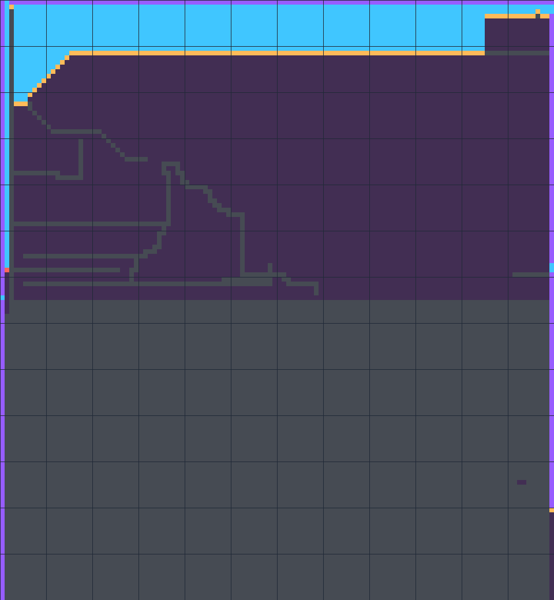
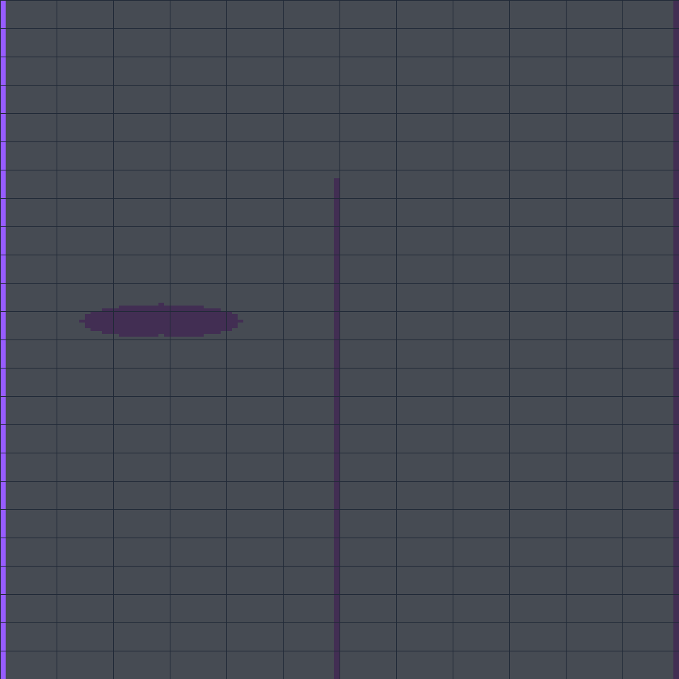
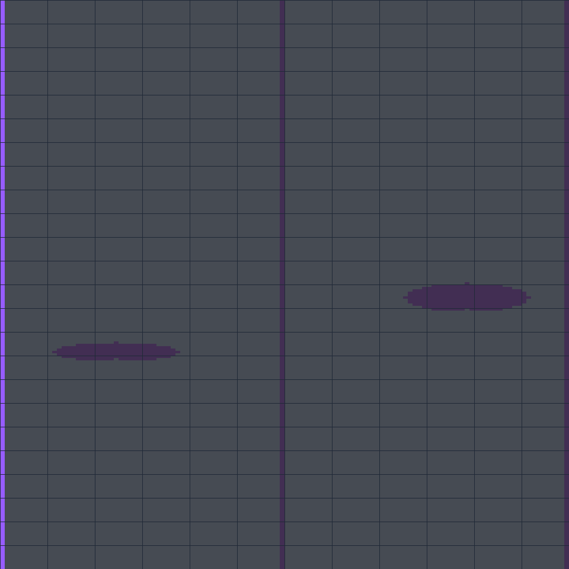

Weather Precipitation Mask Mockups
Visual-only masks. Purple perimeter is ignored outer shell; cyan is direct precipitation; orange/red is first landing or visual cover; dark purple is sheltered.
Legend

Full Runtime Crop

Surface / Town

Upper Underground

Deep Underground
